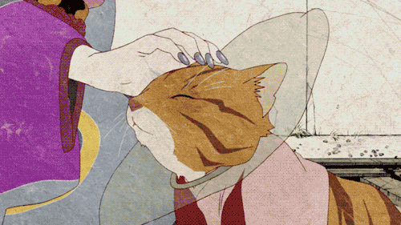

作品由“座敷童子”、“海坊主”、“無顏怪”、“鵺”、“化貓”五個小故事組成。
故事講述了小鎮上發生了奇怪的事件，在慌亂的村民面前出現了一個持退魔之劍的謎一般的賣藥人，他能夠通過退魔之劍斬殺引起慌亂的妖怪，但是拔出退魔之劍需要聚齊“形”、“真”和“理”。
形即由人的因緣所構成的妖怪的形態；真即事件的真相；理即當事人真實的想法。拔出劍後，變為驅魔人，斬妖殺怪。
一個被人追殺的懷孕婦人逃到了一家旅館，但是已經客滿了，於是老闆娘把她帶到了一間從不住人的房間，在去房間的路上婦人聽到了小孩的聲音，但是這天旅館裏沒客人帶小孩來住。
這家旅館原本是家妓院，妓院裏的女人懷孕了都是由老闆娘墮的胎，而這些沒出生就死了的小孩渴望出生，渴望被人愛，由此產生的怨恨讓他們變成了妖怪，而最後還是母愛拯救了他們。
在日本神話裏座敷童子是帶給人們幸福和好運的妖怪，只要他住在某人的家裏，這個家就會非常的繁榮，《怪化貓》則是把座敷童子改編成了非常悲傷的故事 。
海坊主是一個發生在海上的商船上的故事，船上有着各式各樣的乘客：肥頭大臉想要暴富一把的船老闆、自以為毫無畏懼的武士、有着怪腔怪調的修行者、快人快語的傭人小姐、比船老闆更肥胖的有道高僧和其隨行者。
一羣人想要向江户進發卻因為有人利用磁鐵改變的了羅盤的方向導致船行到號稱怪物之海的海域。而如此做的犯人正在是上述眾人之中，一時間這裏倒成了個密室，而傭人小姐開始分析各人的犯罪嫌疑。
海座頭的出現把劇情推向了一個小高潮，在橋頭彈奏着琵琶一個個詢問着你所真正害怕的事物一邊展現着你所懼怕的幻想，那種蠶食人心控制感官的恐怖蔓延在眾人之間，隨着海座頭的問話，真相的脈絡也漸漸展現。
事件的緣起：五十年前高僧的妹妹代替高僧祭海，高僧對妹妹替自己死去的愧疚與恐懼所產生的怨念把這片海域幻化成了妖怪之海。
海坊主：坊主就是和尚，和尚到了海上就是海坊主，也就是海和尚。
海座頭：如果出海的漁夫突然被霧困住分不清前後左右，有時候前面的霧裏就會映出人影，離近了一看，是個揹着琵琶的琴師，當漁夫在他的指引下安全抵達岸邊的時候，琴師依然站在海上遠遠相望，海座頭是妖怪中的善類。
一個為滿足母親的虛榮心而嫁入貴族家族的女人，在遭受婆家人和丈夫的虐待後，因為過度的悲傷和壓抑導致被無顏怪附身，在自殺後卻不自知，只以為自己將夫家的人殺死，並將被處刑。
而無顏怪則在每次的處刑前將其救出，並送回夫家，導致無限的輪迴悲劇，最終由藥郎將她從輪迴中救出。
所謂的無顏怪就是女主人公心中的壓抑幻化的妖怪，是一個備受欺辱，記不起自己原來的樣貌和身份，連自己已淪為妖怪都不知道的悲哀靈魂。
傳説誰能得到一種神秘的香木“東大寺”，能得到天下。於是想要得到“東大寺”的人便爭相想成為的“東大寺”保管者——女主人琉璃姬的夫婿，最後四人決定用聞香來決出勝負，但是在比賽當天卻只有三人到場，於是賣藥郎以第四人的身份參加。
在比賽過程中卻發現了缺賽者的屍體，但是其他三人還是要繼續，在這之中不斷有人死亡，最後參加的人和琉璃姬都死了。
其實琉璃姬，庭院裏的小女孩還有老婆婆都是東大寺所變化而成的，而那些所謂的參賽者在很久以前就已經死亡了，他們的靈魂被妖怪所玩弄，每夜都在舉行着無止境的組香遊戲。
“東大寺”為了保持自己的盛名，故意製造出能給擁有它的人帶來金錢和權利的傳聞，迷惑一個又一個有貪婪野心的人進入它的圈套。最後被賣藥郎斬滅。
在地下鐵開通之際，幾個看上去毫不相關的人被關在同一節車廂。陸續的有人消失。
等到最後，卻是一個枉死的女記者化為貓怪來複仇。一切都在賣藥郎拔出退魔劍的的“形”“真”“理”中現出真相。